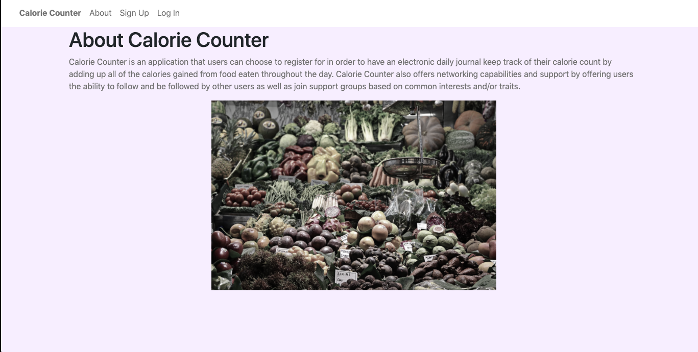
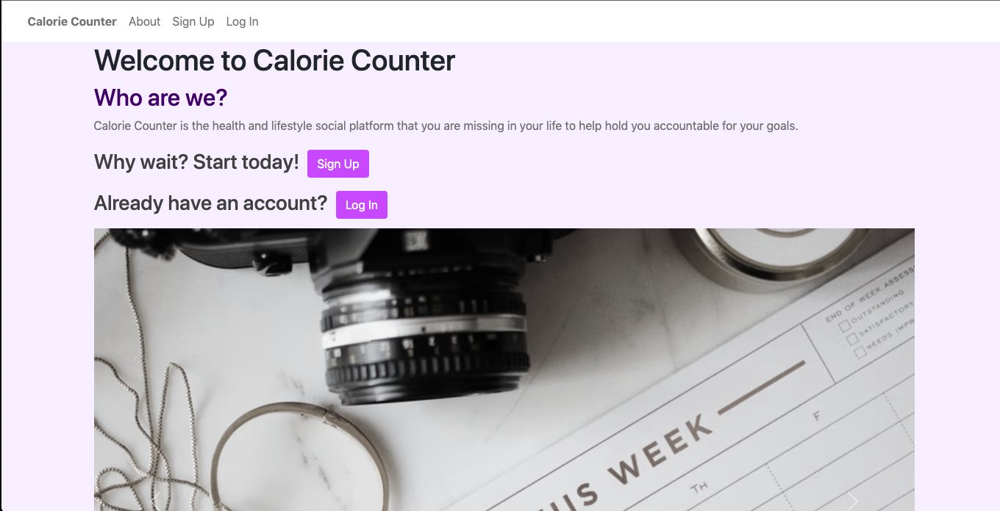

Status: Production
Calorie Counter is an online food journal where registered users are able to log their daily food intake, receive a caloric value for each food he/she logs, and network with other registered users. This application was created entirely by Taylor Wagner from idea development all the way to deployment.
The main features of this application include: creating and logging into an account, recording food and displaying the caloric value of food items, and connecting with other users by following, being followed, and/or joining support groups.
Technologies utilized for this application include: Python, Flask, WTForms, PostgreSQL, SQLAlchemy, Javascript, Bootstrap, Heroku. Calorie Counter also utilizes the CalorieNinjas API for the feature of display the caloric value of food inputs.